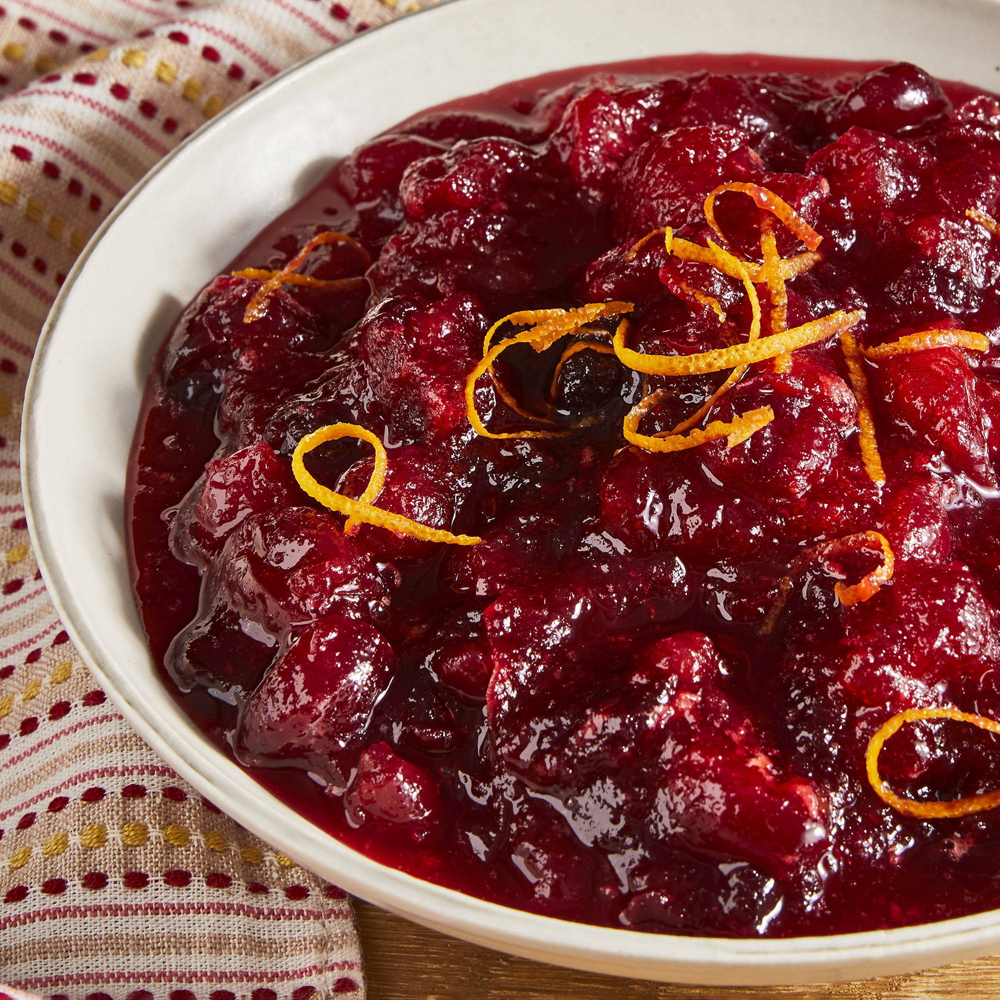

Cranberry Sauce Recipe

Description
This basic recipe shows how to make homemade cranberry sauce with orange juice.
Ingredients
- 12 ounces cranberries
- 1 cup white sugar
- 1 cup orange juice
Steps
- Dissolve sugar in the orange juice in a medium saucepan over medium heat.
- Stir in the cranberries and cook until they start to pop, about 10 minutes.
- Remove from heat and place sauce in a bowl. It will thicken as it cools.